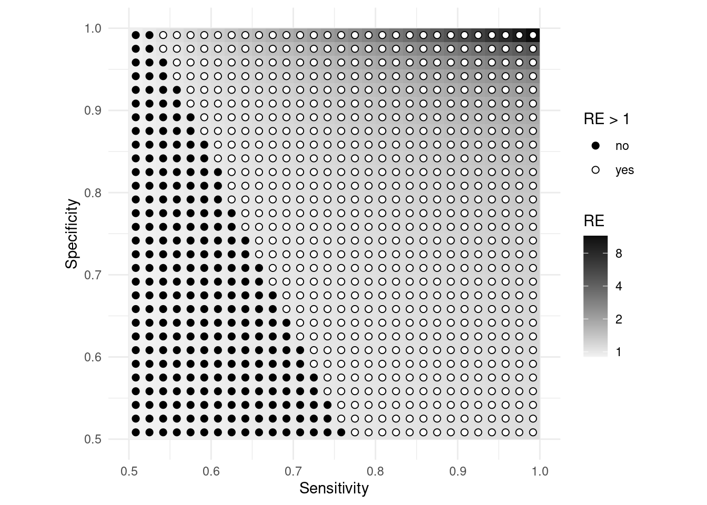
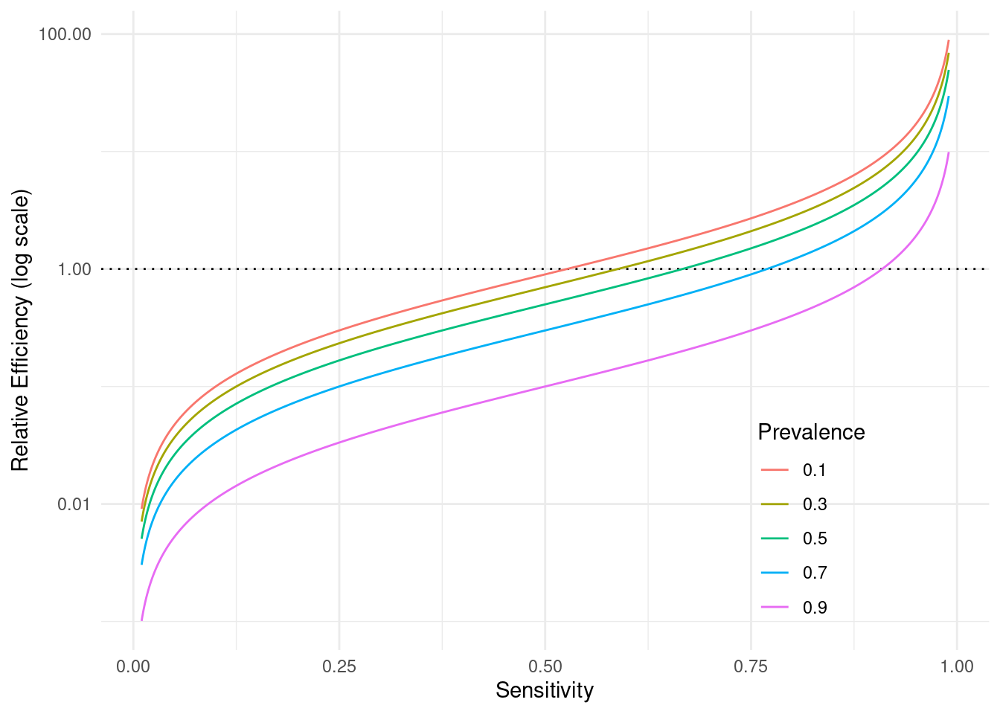
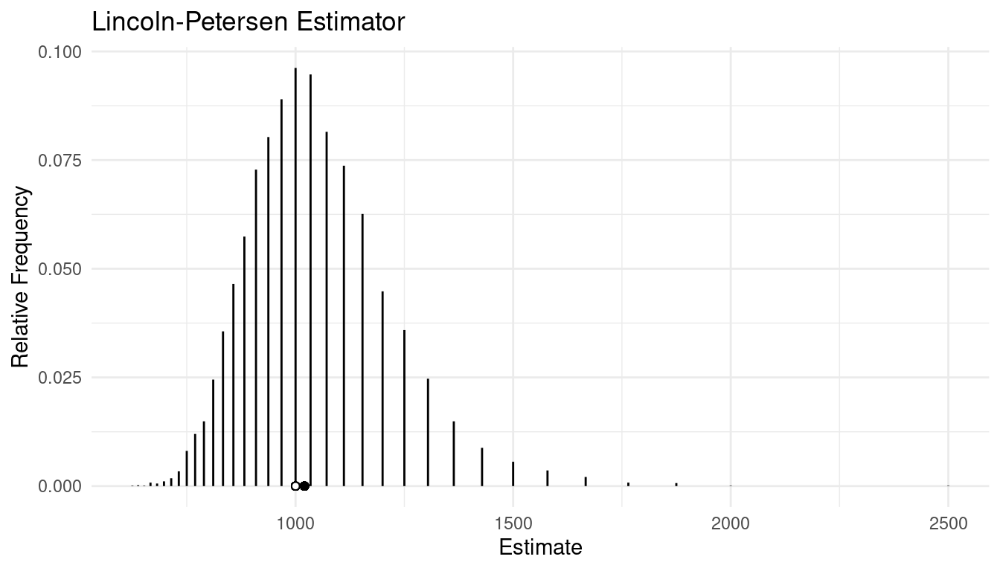
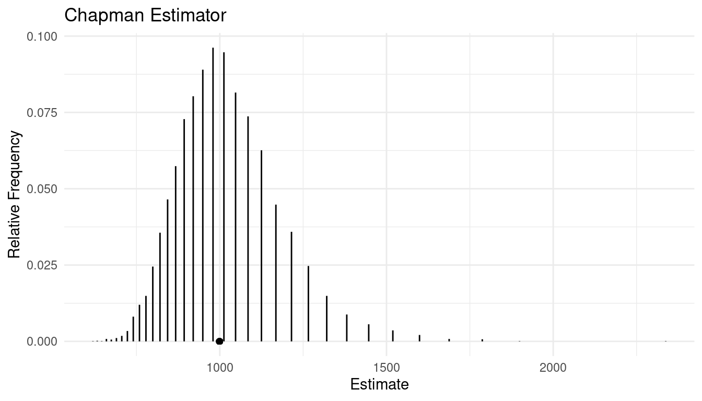

You can also download a PDF copy of this lecture.
Assume a simple random sampling design and the problem of estimating the number of elements in a population that have a disease. Thus \(y_i\) is defined as \[ y_i = \begin{cases} 1, & \text{if the $i$-th element has the disease}, \\ 0, & \text{if the $i$-th element does not have the disease}. \end{cases} \] The number of elements in the population that have the disease is then \[ \tau_y = \sum_{i=1}^N y_i. \] Assume that we know the number of elements in the population (\(N\)). Two estimators we could use are \[ \hat\tau_y = N\bar{y} \ \ \ \text{and} \ \ \ \hat\tau_y = \tau_x\bar{y}/\bar{x}, \] where \(x_i\) is some auxiliary variable. Note that \(\bar{y}\) is the proportion of elements in the sample that have the disease.
Consider using a cheap/quick diagnostic test for the auxiliary variable that can be applied to all elements in the population. Let \(x_i\) then be defined as \[ x_i = \begin{cases} 1, & \text{if the $i$-th element tests positive}, \\ 0, & \text{if the $i$-th element tests negative}. \end{cases} \] Then \[ \tau_x = \sum_{i=1}^N x_i \] is the number of elements in the population that test positive on the diagnostic test, and \(\bar{x}\) is the proportion of elements in the sample that test positive on the diagnostic test.
Note that the diagnostic test need not be perfect. Some people with the disease may test negative (a false negative), and some people without the disease may test positive (a false positive).1
Example: Assume that the University of Idaho currently has 10000 students. Researchers want to know how many students currently have COVID-19. Assume that all students were administered a rapid test, and of these 300 tested positive. In a simple random sample of 1000 students, 40 are found to have COVID-19 using the highly accurate PCR test, and of these students 35 had tested positive on the rapid test. What are our estimates of the number of students that have COVID-19 using the two estimators above, where the ratio estimator uses the rapid test result as an auxiliary variable?
Applying the rapid test would be expensive. Is it worth it? Consider
the relative efficiency of the rapid test. It can be shown that in this
situation \[
V(N\bar{y}) = \left(\frac{N-n}{N-1}\right)\frac{\mu_y(1-\mu_y)}{n}
\] and \[
V(\tau_x\bar{y}/\bar{x}) =
\left(\frac{N-n}{N-1}\right)\left(\frac{\mu_y}{\mu_x}\right)\frac{1-\mu_y\pi_{\text{sens}}
- (1 - \mu_y)\pi_{\text{spec}}}{n},
\]
where \(\mu_y = \tau_y/N\) is the
proportion of elements in the population that have COVID-19
(prevalence), \(\mu_x = \tau_x/N\) is
the proportion of elements in the population that would test positive on
the diagnostic test, and \(\pi_{\text{sens}}\) and \(\pi_{\text{spec}}\) are the
sensitivity and specificity of the diagnostic test for
this population.
Sensitivity (\(\pi_{\text{sens}}\)) is the probability that a test will return a positive result when applied to someone with the disease (thereby avoiding a false negative).
Specificity (\(\pi_{\text{spec}}\)) is the probability that a test will return a negative result when applied to someone without the disease (thereby avoiding a false positive).
The relative efficiency of the ratio estimator (in comparison to the expansion estimator) is then \[ \text{RE} = \frac{V(N\bar{y})}{V(\mu_x\bar{y}/\bar{x})} = \frac{(1-\mu_y)\mu_x}{1-\mu_y\pi_{\text{sens}} - (1 - \mu_y)\pi_{\text{spec}}}, \] where it can be shown that \[ \mu_x = \mu_y\pi_{\text{sens}} + (1 - \mu_y)(1 - \pi_{\text{spec}}). \] Thus the relative efficiency depends on the prevalence of the disease (\(\mu_y\)), the sensitivity of the test (\(\pi_{\text{sens}}\)), and the specificity of the test (\(\pi_{\text{spec}}\)).
Example: The figure below shows the relative efficiency of the ratio estimator when the prevalence is \(\mu_y\) = 0.1 as a function of sensitivity and specificity.

This idea can be applied to other problems where the domain is not “has disease” but there is some sort of “diagnostic test” that can be used.
Example: Assume now that researchers want to estimate the number of students at the University of Idaho that have been vaccinated. Based on a simple random sample of 1000 students they find that 640 of the students have been vaccinated. But they also find that of the 640 vaccinated students in the sample, 370 had already provided verification of being vaccinated so that they could earn a $50 gift card and a chance to earn up to $5000 in tuition credits. The researchers know that a total of 3600 students have provided proof of verification. What are our estimates of the number of vaccinated students at the University of Idaho?
What are the (estimated) sensitivity and specificity of the “diagnostic test” in the previous problem?
The plot shows the relative efficiency of the ratio estimator for the previous survey for various hypothetical values of prevalence and sensitivity.

A simple mark-recapture design is essentially a sampling design where we create an auxiliary variable for the purpose of estimating the number of elements in the population. This auxiliary variable is created by “marking” a subset of elements.
Consider a simple random sampling design where we have an
auxiliary variable \(x_i\)
such that \[
x_i =
\begin{cases}
1, & \text{if the $i$-th element is marked}, \\
0, & \text{if the $i$-th element is not marked},
\end{cases}
\] and so that \[
\tau_x = \sum_{i=1}^N x_i
\]
is the number of marked elements in the population. As before let \(y_i\) = 1 for all elements in the
population so that \(\tau_y = N\). The
ratio estimator of \(\tau_y\) (and
hence \(N\)) is then \[
\hat\tau_y = \tau_x\bar{y}/\bar{x} = \tau_x/\bar{x},
\] since \(\bar{y}\) = 1. We can
also write this as \[
\hat{N} = \frac{\tau_x n}{m},
\] where \(m\) is the number of
marked units in the sample because \(\bar{x} = m/n\) (i.e., the proportion of
elements in the sample that are marked where \(n\) is the size of the sample and \(m\) is the number of marked elements in the
sample). This estimator is sometimes called the Lincoln-Petersen
estimator (or index). There are several estimators of the variance
of this estimator. One of them is \[
\hat{V}(\hat{N}) = \frac{\tau_x^2 n(n-m)}{m^3}.
\] Example: Suppose I have a large jar of jelly
beans. Suppose we remove 300 jelly beans, mark them each with a pen, and
then put them back in the jar. Then we shake the jar and draw a handful
of 100 jelly beans. Of these we find that 30 are marked. What is our
estimate of the number of jelly beans in the jar? What is the bound on
the error of estimation?
The Lincoln-Petersen Estimator is biased. It can be shown that \(E(\hat{N}) > N\), although the bias decreases as \(\tau_x\) and/or \(n\) increase.
Example: The figure below shows the approximate sampling distribution of the Lincoln-Petersen estimator when \(N\) = 1000, \(\tau_x\) = 300, and \(n\) = 100.

An alternative estimator that has much less bias is the Chapman estimator \[ \hat{N} = \frac{(\tau_x + 1)(n + 1)}{m + 1} - 1, \] which has an estimated variance of \[ \hat{V}(\hat{N}) = \frac{(\tau_x + 1)(n + 1)(\tau_x - m)(n - m)}{(m + 1)^2(m + 2)}. \] The Chapman estimator is either unbiased or has relatively small bias.
Example: The figure below shows the approximate sampling distribution of the Chapman estimator when \(N\) = 1000, \(\tau_x\) = 300, and \(n\) = 100.

Example: Suppose I have a large jar of jelly beans. Suppose we remove 300 jelly beans, mark them each with a pen, and then put them back in the jar. Then we shake the jar and draw a handful of 100 jelly beans. Of these we find that 30 are marked. What is our estimate of the number of jelly beans in the jar? What is the bound on the error of estimation?Assessing the presence of the disease to obtain \(y_i\) may use a different diagnostic test. The assumption here is that this test is (nearly) perfect — sometimes called a “gold standard” — in that it has a negligible probability of a false negative or a false positive.↩︎